Introduction
Every year dozens of Major League Baseball teams compete throughout the season for a chance to compete in the playoffs and win the world series. Fans of the sport make bets and predictions on how their favorite team will do using a wide variety of team statistics.
Many factors contribute towards a team's success, but perhaps the most important indicators are their offensive and defensive performance.
Offensive performance can be measured by a team's ability to put runs on the board while defensive performance can be measured by the amount of runs their opponents score.
Our project focuses on determining whether a team's runs scored per game and runs allowed per game are a reliable predictor of a team's chances of making the playoffs.
|
Methodology - Feature Selection & Unsupervised Learning
Describe the Data set
Our dataset contains a variety of different MLB statistics broken down by team.
Some statistics, such as total runs and homeruns, are integer values representing a team's total throughout the season.
Others are averages calculated per game or percentages across the season. As for total size of the dataset, we have 9 different features for 30 different teams
across 10 seasons (2012 - 2021) giving us 2,421 data points.
Describe the Approach
The first way we looked at our data was by the creation of a correlation matrix and calculating the mutual information with the target for each feature.
We used these to choose features to remove, prioritizing those highly correlated to other features and/or with low mutual information with the target.
The unsupervised learning algorithms we used for data cleaning and dimensionality reduction were k-means, GMM, and DBscan.
These are clustering algorithms which group up the data and help us to select and drop certain features and choose the correct numbers of clusters.
We opted to run all three algorihms since they each have their advantages/disadvantages when being used on different datasets.
After running the three algorithms, we compared the three of them on key metrics such as fowlkes-mallows, davies-bouldin, and sillhouette scores.
This should give us a good idea of which features are most important to analyze in terms of making accurate predictions and which can be removed.
|
Results - Feature Selection and Unsupervised Learning
Correlation Matrix of Features
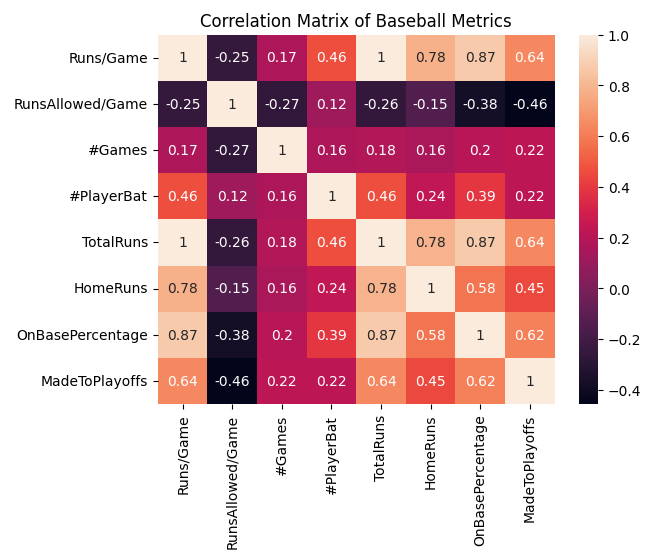
The above correlation matrix indicates that runs per game, total runs, and on base percentage are the most correlated with playoff appearances.
It also shows that total runs, home runs, runs per game, and on base percentage are highly correlated.
|
Mutual Information of Features with Target
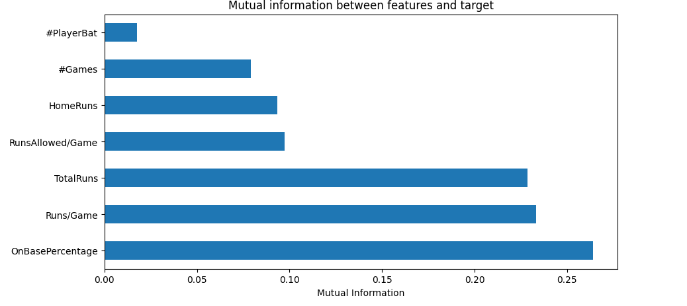
Based on the above graph, we can see which features have more or less mutual information with our target dataset. Given that total runs, home runs, and runs per game are highly correlated
and that the former two provide less mutual information with the target we opted to drop those features.
|
Scree Plot of Explained Variance from PCA
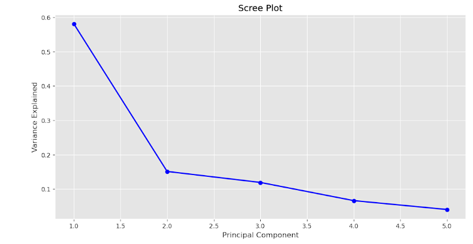
Variance explained by n principal components. Noticeable elbow at 2 components.
|
Scree Plot of Explained Variance Ratio from PCA
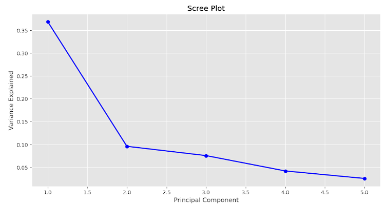
Eigenvalues of each n principal component(s). None are greater than 1, which implies low explainablity. The kaiser rule has less importance here as a criterion since none of the eigenvalues are greater than 1
|
K Means Elbow Method
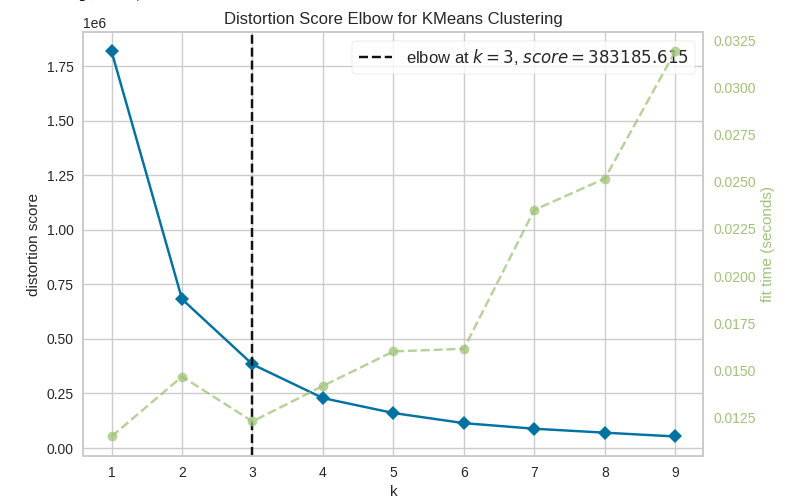
After removing highly correlated features that provided low mutual information with the target we ran k means and produced this elbow graph which shows us that a k-value of 3 is best.
|
Unsupervised Algorithm Comparison

The graph above is a comparison of the different clustering algorithms. Here we can see that K Means and GMM were far more effective than DB Scan with much higher fowlkes-mallows and sillhouette scores and lower davies-bouldin score.
|
|
Discussion - Feature Selection and Unsupervised Learning
Feature Selection and Engineering
We found that certain features were highly coorelated with one another and had varying levels of mutual information with the target.
This told us which features were redundant or otherwise superfluous.
The features that were found to be redundant were scoring metrics which were closely related, such as runs per game, total runs, and home runs.
As these features are not independent of one another, a change in any of them would change the others.
We chose to drop two of the aforementioned features as only one of them is needed; we chose to keep runs per game due to its higher mutual information with the target.
Unsupervised Learning
The unsupervised learning methods we used were GMM, DB Scan, and K-Means. The evaluation metrics we chose to measure their performance were fowlkes-mallows score, normalized mutual information, davies-bouldin, and sillhouette score.
These evaluation metrics were chosen because they each measure different things and will give a pretty round answer as to whether the clustering is effective.
Fowlkes-mallows will measure how many false positives and negatives are found in the clustering, normalized mutual information measures information retrieval, davies-bouldin measures the separation of clusters, and sillhouette score gives us an idea of each clusters cohesion.
As shown above in our graphs, K Means and GMM performed far better than DB Scan, and K Means performing slightly better than GMM. This performance was consistent across all four evaluation metrics.
K Means performed well with our data for a few reasons, first our data is entirely numeric and not categorical, there aren't many outliers in the data, and calculating the proper k value (3) improved performance drastically.
GMM performed well because several features are normally distributed as histograms of our data show. It's slightly lower performance than k means is likely due to the number of games metric, which is not normally distributed.
DB Scan's underperformance was not expected; we believe it is due to the varying densities of the clusters.
|
Methodology - Supervised Learning
Describe the Approach
The next step is to select supervised learning algorithms to run to create the actual prediction model. We opted to run 3 supervised learning algorithms of different complexities.
The four we chose are logistic regression, naive bayes, and XGBoost.
For each of the algorithms we first determined through trial and error what split of test to training data worked the best.
For Logistic Regression and Gaussian Naive Bayes a 70 to 30 training to test split worked the best. For XGBoost 90 to 10 worked the best.
For Logistic Regression, the data was split in half into American League teams and National League teams since only 5 teams from each division can go to the playoffs.
For each run, K folds cross validation with a K value of 5 was used in order to avoid overfitting and get more complete results.
The algorithm was then run and evaluation metrics were measured.
For Gaussian Naive Bayes, the first step was to determine which features were Gaussian and which weren't.
This was done through histograms, KDE plots, and Q-Q plots. Each visualization would show the distribution of the data, with the Q-Q plots seemingly being the most effective visualization. We also ran Shapiro & Kolmogorov-Smirnov tests.
Once that was figured out, the non Gaussian features were dropped and the algorithm was run.
For XGBoost, the data was split into a 90-10 train-test data ratio. From there, tune hyperparameters to maximize precision while monitoring recall, precision, and auc roc.
During tuning, we noticed that the recommended value for scale_position_weight needed to be higher than expected in order for the model to predict enough values for a single season's worth of data whereas random rows of data didn't need the same degree of tuning.
The algorithm was then ran 50 times.
|
Results - Supervised Learning
Logistic Regression Before NL/AL Split
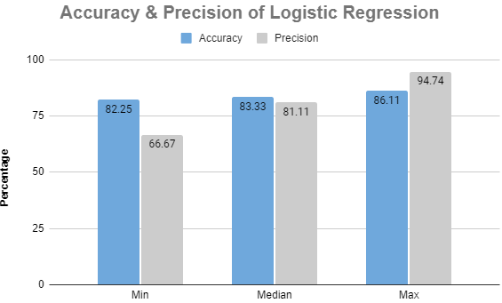
The above graph shows accuracy and precision for Logistic Regression before the data was split by division.
The disparity between minimum and maximum of the metrics was not too wide.
|
Logistic Regression Post NL/AL Split
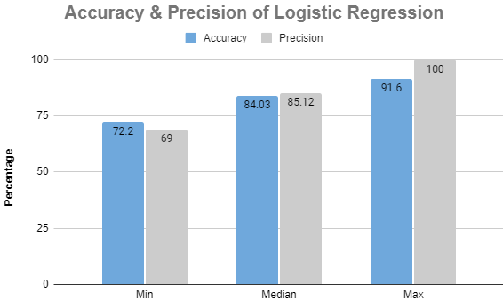
This graph shows metrics for Logistic Regression after the data was split by division.
After the split, median accuracy saw an increase of just under 1 percent and median precision saw an increase of over 4 percent. The minimum and maximum precision increased as well.
|
Histograms of feature distribution
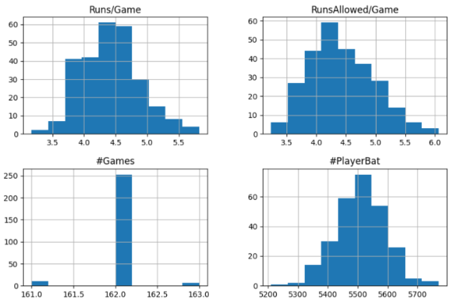
The above histograms show the distribution of the features, the main outlier of this group seems to be #Games.
|
Q-Q Plots of Feature Distribution
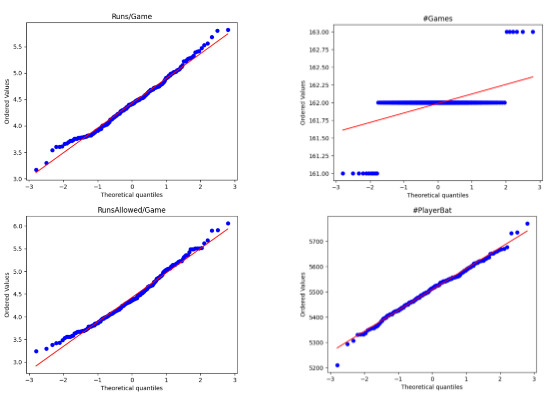
The above Q-Q plots show the distribution of the features and, combined with the histogram, suggest that #Games is the only non Gaussian feature.
|
Gaussian Naive Bayes Results
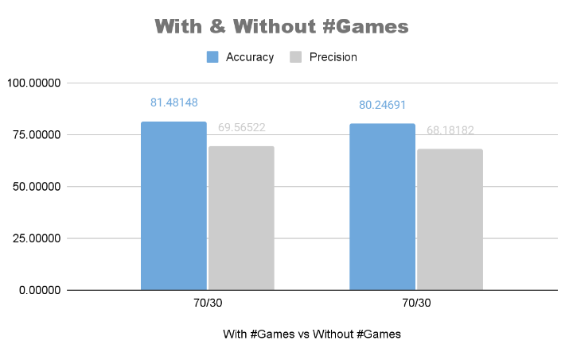
The above graph shows the accuracy and precision for the Gaussian Naive Bayes run with and without #Games. Removing it lowers performance slightly even though it is not a Gaussian feature.
|
Gradient Boosting Results
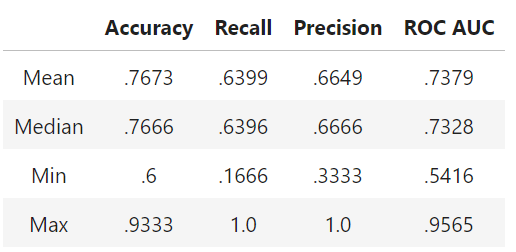
Over 50 different test splits XGBoost had roughly a .73 median accuracy. A precision of .6 on average suggests that the model is only slightly better than a coinflip for positive predictions, but the results varied between .25 to perfect precision. However, the results are widely varied.
|
|
Discussion
We chose to use these three algorithms because they differ in complexity, implementation, and they each work with numerical datasets for binary outcome problems.
For the evaluation metrics, we found accuracy and precision to be the most important predictors of the model's success.
Precision is important for our project especially, since it measures how well the model predicts a specific outcome, and in our case it's important for our model to minimize false positives.
Performance wise, Logistic Regression performed better than XGBoost and Gaussian Naive Bayes did.
Logistic Regression performed well because it is well suited for binary predictions, is good with close calls due to its probability predictions, and we had an approximately linear relationship between some of our predictors and our target.
Gaussian Naive Bayes underperformance is likely due to the fact that not all of our features were Gaussian. Since number of games is an important feature for prediction, removing it had its own negative effect despite all features being Gaussian once it was removed.
Number of Games is an important feature because it is the same for each team except for a few outliers, these extra or skipped games have a significant effect on the outcome of each team's season.
Additionally, some of our features are collinear which generally works better for regression models.
Over 50 different test splits of XGBoost had roughly a .73 median accuracy.
Xgboost's maximum accuracy was .9, which indicates the potential for this method to predict playoff chances off of our chosen features.
Auc Roc (auc roc) indicates how well Xgboost is able to confidently make predictions where 1 is the perfect value and .5 indicates random predictions.
Since our auc roc is .7 on average and ranges between .56 to .9, we can conclude Xgboost can make relatively confident decisions based on our features.
We think the variance between all metrics is caused by hidden features or randomness between games.
One issue with all of the algorithms that we discovered, due to our classmate's suggestion, is that we did not take into account the fact that only 5 teams from each of the two divisions go to the playoffs.
After fixing this issue, by separating the data and having the model predict two lists of five that they then combine, we saw increased median and maximum accuracy and an increase of precision across the board.
This change having a high effect on precision makes sense since the number of false positives (teams predicted to go to the playoffs that actually don't) should go down when it can only pick 5 AL teams and 5 NL teams rather than just the 10 best teams statistically, since the statistics could skew towards one league or the other.
|
Prediction For the 2023 Season
American League Teams:
- Texas Rangers
- Tampa Bay Rays
- Houston Astros
- Toronto Blue Jays
- Boston Red Sox
|

Go Rangers!
|
National League Teams:
- Atlanta Braves
- Los Angeles Dodgers
- San Diego Padres
- Chicago Cubs
- Seattle Mariners
|
*We are not liable for any money losses due to gambling*
|
|